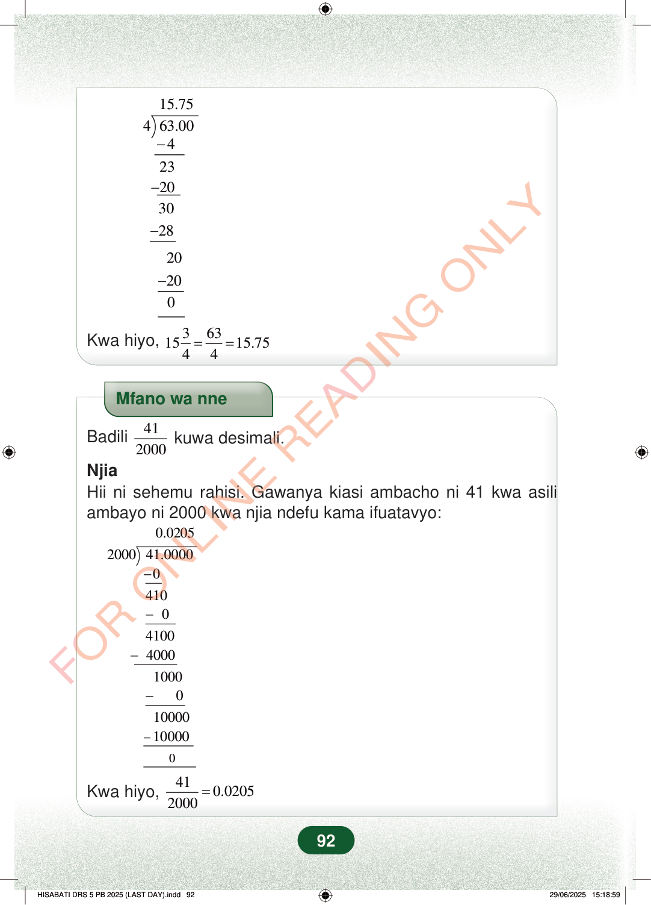

−−−15.75463.0042320302820−200Kwa hiyo,3631515.7544==Mfano wa nneBadili412000kuwa desimali.NjiaHii ni sehemu rahisi. Gawanya kiasi ambacho ni 41 kwa asiliambayo ni 2000 kwa njia ndefu kama ifuatavyo:0.0205−−−−200041.00000410041004000100001000010000−0Kwa hiyo,410.02052000=92
15.75 4 63.00 4 23 20 30 28
20
20 0
Kwa hiyo, 3 63 15 15.75 4 4 = =
Mfano wa nne
Badili 41
2000 kuwa desimali.
Njia Hii ni sehemu rahisi. Gawanya kiasi ambacho ni 41 kwa asili ambayo ni 2000 kwa njia ndefu kama ifuatavyo:
0.0205
2000 41.0000 0 410 0 4100 4000 1000 0 10000 10000 −
0
Kwa hiyo, 41 0.0205 2000 =
92
Mgawanyo mrefu unaonesha 63.00 ÷ 4 = 15.75. Chini yake inaonesha kuwa 15 3/4 ni sawa na 63/4 na 15.75.Kwa hiyo, <math><mrow><mn>15</mn><mfrac><mn>3</mn><mn>4</mn></mfrac><mo>=</mo><mfrac><mn>63</mn><mn>4</mn></mfrac><mo>=</mo><mn>15.75</mn></mrow></math>.Mfano wa nne unaonesha jinsi ya kubadili 41/2000 kuwa desimali. Mgawanyo mrefu unaonesha kuwa 41/2000 = 0.0205.Mfano wa nneBadili <math><mfrac><mn>41</mn><mn>2000</mn></mfrac></math> kuwa desimali.NjiaHii ni sehemu rahisi.Gawanya kiasi ambacho ni 41 kwa asili ambayo ni 2000 kwa njia ndefu kama ifuatavyo:Kwa hiyo, <math><mrow><mfrac><mn>41</mn><mn>2000</mn></mfrac><mo>=</mo><mn>0.0205</mn></mrow></math>.